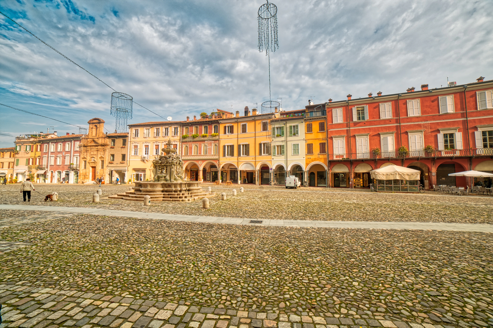
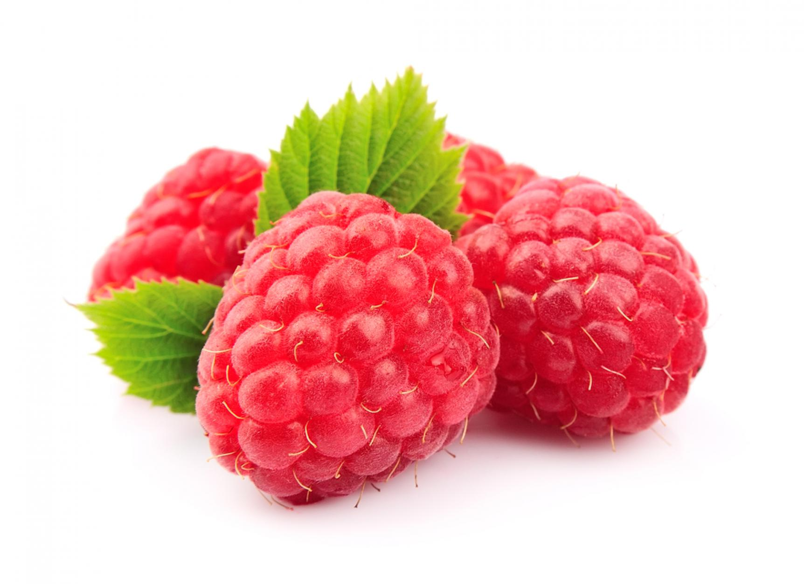

Hi, I am Enrico Benedettini, and I study computer science at USI.
Here on the left you can see an exact representation of Alfio when he tries to code something.
I decided to study computer science because I am intrigue by the logic behind the programs
that we use every day. In the end, we managed to make rocks think!
I am from Cesena, Italy, a beautiful city very close to the sea.
Cesena was originally an Umbrian or Etruscan town, later known as Caesena.
After a brief spell under Gaulish rule, it was taken over by Romans in the
3rd century BC. It was a garrison town of strategic importance which was
destroyed in the wars between Gaius Marius and Sulla. Pliny mentions
the wines of Cesena as among the best.
I have to agree with Pliny, because our wine is fantastic.


Here is a picture of a raspberry.
Raspberries are an important commercial fruit crop,
widely grown in all temperate regions of the world.
The raspberry is the edible fruit of a multitude of
plant species in the genus Rubus. The major kinds
cultivated are red, black, purple, and blue raspberries.
The berries should be picked when fully ripe and conveyed
to the factory in crates of the shallow boxes to prevent
bruising or crushing of the fruit. The berries should be
handled promptly when received at the factory, as they tend
to grow mould quickly.